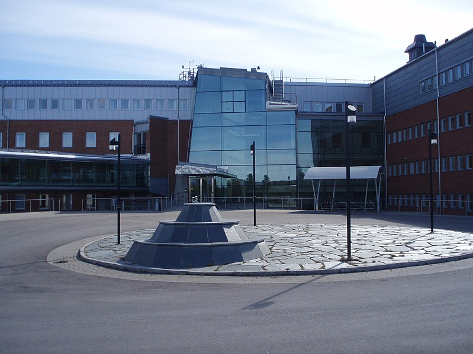

Solen
Globen, Stockholm
Diameter: 71 m
Bild: Ludvig Ehrenstråle
Merkurius
Stockholms stadsmuseum
Diameter: 25 cm
Distans från Globen: 2,9 km
Bild: Joongi Kim
Venus
Vetenskapens hus
Diameter: 62 cm
Distans från Globen: 5,5 km
Bild: Tanja Nymark
Jorden
Cosmonova, Riksmuseet
Diameter: 65 cm
Distans från Globen: 7,6 km
Bild: Joongi Kim
Mars
Mörby Centrum
Diameter: 35 cm
Distans från Globen: 11,6 km
Bild: Udo Schröter
Jupiter
Arlanda
Diameter: 7,1 m
Distans från Globen: 40 km
Bild: Peter Rosén
Saturnus
Uppsala
Diameter: 6,1 m
Distans från Globen: 73 km
Bild: Bengt Oberger
Uranus
Lövstabruk
Diameter: 2,6 m
Distans från Globen: 130 km
Bild: Greger Ravik
Neptunus
Söderhamn
Diameter: 2,5 m
Distans från Globen: 229 km
Bild: Paul Schlyter
Pluto
Delsbo, Hudiksvalls kommun
Diameter: 12 cm
Distans från Globen: 300 km
Bild: Paul Schlyter
Asteroid Eros
Mörbyskolan, Danderyd
Diameter: 2 mm
Distans från Globen: 11 km
Bild: Elina Emmeborn
Asteroid Saltis
Kunskapsskolan, Saltsjöbaden
Diameter: mindre än 1 mm
Distans från Globen: 17 km
Bild: Bengt Oberger
Asteroid Vesta
Åva gymnasium, Täby
Diameter: 4 cm
Distans från Globen: 17 km
Bild: Albin Holm
Asteroid 5025 P-L
Alsike, Knivsta
Diameter: 0,2 mm
Distans från Globen: 60 km
Bild: Bengt Oberger
Transneptun Haumea
Borlänge
Diameter: 10 cm
Distans från Globen: 200 km
Bild: Anna-Lena Rågfälts
Transneptun Quaoar
Gislaved
Diameter: 6 cm
Distans från Globen: 340 km
Bild: Halvard Nilsson
Transneptun Ixion
Technichus, Härnösand
Diameter: 6,5 cm
Distans från Globen: 360 km
Bild: Anders Sandberg
Transneptun Makemake
Slottsskogsobservatoriet, Göteborg
Diameter: 7 cm
Distans från Globen: 400 km
Bild: Elina Emmeborn
'Oumuamua
Plönninge, Halland
Diameter: 0,3 mm
Distans från Globen: 440 km
Bild: Halvard Nilsson
Transneptun Gonggong
Tycho Brahe-observatoriet, Malmö
Diameter: 7,5 cm
Distans från Globen: 500 km
Bild: Elina Emmeborn
Transneptun Eris
Curiosum, Umeå
Diameter: 13 cm
Distans från Globen: 510 km
Bild: Paul Schlyter
Transneptun Sedna
Teknikens hus, Luleå
Diameter: 10 cm
Distans från Globen: 810 km
Bild: Olle Nordberg
Halleys komet
Balthazar, Skövde
Diameter: Olika
Distans från Globen: 260 km
Bild: Ivar Inkapööl
Swift-Tuttles komet
Kreativum, Karlshamn
Diameter: mindre än 1 cm
Distans från Globen: 390 km
Bild: Elina Emmeborn
Terminalchocken
Instititet för rymdfysik, Kiruna
Diameter: Skylt
Distans från Globen: 950 km

Bild: Dag Lindgren


{kind=link}
{kind=link}


{kind=link}
{kind=link}


{kind=link}


{kind=link}